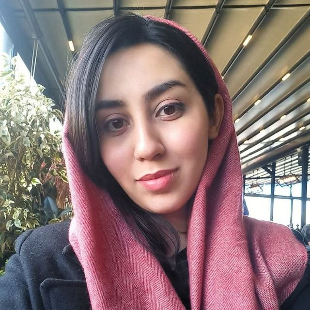

Reliable Medical Image Analysis
Designing patient-specific prediction pipelines with rigorous validation methodologies on medical imaging datasets.

Researcher · Machine Learning
Building reliable medical AI through uncertainty quantification, spurious-correlation auditing, and large language model reasoning.
I'm a Master's student in Computer Engineering & Bioinformatics at Sharif University of Technology, working in the Robust and Interpretable Machine Learning (RIML) lab.
My research focuses on making medical AI trustworthy. I investigate uncertainty quantification and deep generative modeling for radiological image analysis, design patient-specific prediction pipelines with rigorous validation, and develop robust frameworks for clinically relevant decision support.
I'm also exploring how large language models can accelerate scientific discovery — from hypothesis generation to automated scientific reasoning — and how to audit image classifiers for spurious correlations and bias.
Designing patient-specific prediction pipelines with rigorous validation methodologies on medical imaging datasets.
Investigating uncertainty quantification and deep generative modeling techniques for radiological image analysis and prediction.
Uncovering latent sources of model bias and assessing their impact on predictive performance in image classifiers.
Applying large language models to scientific discovery workflows — hypothesis generation, knowledge extraction, and automated reasoning.
Investigating uncertainty quantification and deep generative modeling techniques for radiological image analysis and prediction. Designing and evaluating patient-specific prediction pipelines with rigorous validation methodologies on medical imaging datasets. Developing robust AI frameworks for clinically relevant decision support applications.
Sharif University of Technology · Tehran, Iran
Amirkabir University of Technology (Tehran Polytechnic) · Tehran, Iran
Fall 2025
Explored the application of large language models to scientific discovery workflows through literature review and experimental investigation. Evaluated LLM-based approaches for hypothesis generation, knowledge extraction, and automated scientific reasoning.
Fall 2025
Conducted research on spurious correlation discovery and bias auditing in image classification models. Designed and evaluated data-driven methodologies for uncovering latent sources of model bias and assessing their impact on predictive performance.
Fall 2025
Fall 2023
Developed N-gram models for document retrieval using Mercer-Jelinek smoothing and implemented semantic vector representations with BERT and word2vec for improved query and document analysis.
Fall 2023
Presented a comprehensive survey on recent advancements in Multimodal Information Retrieval, focusing on image retrieval techniques and highlighting key developments and methodologies across recent literature.
University of Amirkabir · GPA 19.1 / 20
For exceptional academic performance
* Indicates graduate-level courses
Computer Webinar Series (CWS)
Mar 2021 — Aug 2022Led content planning, speaker coordination, and ensured accurate scientific information delivery for the Computer Webinar Series.